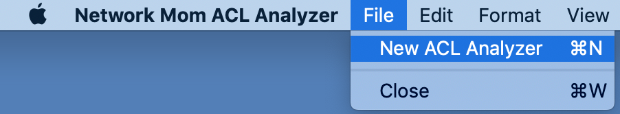
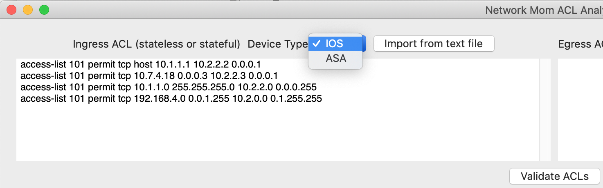
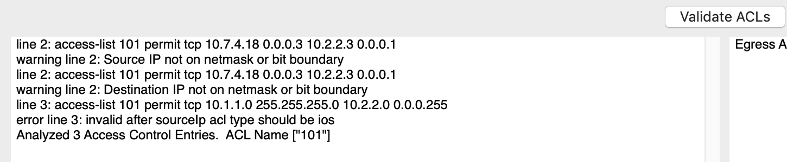
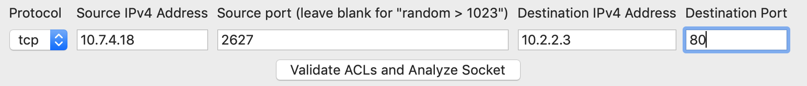
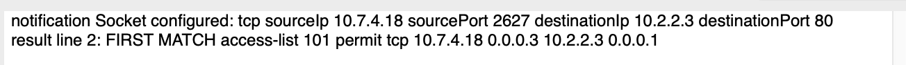
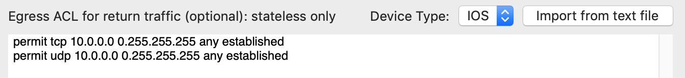
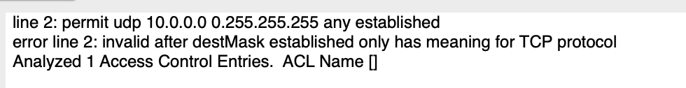
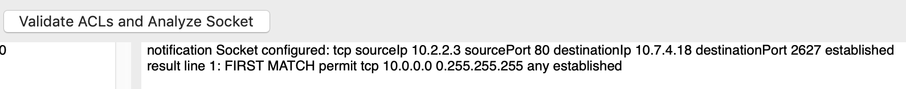

Using The ACL Analyzer
Using The ACL Analyzer
One ACL analyzer window opens by default when the application starts. To open more windows use the ACL Analysis -> New ACL Analyzer menu item.

Input your access-list in the top-left box. Select the device type from the pull down menu. It is important to only put one access-list in the box at a time. An access-list typically has many lines (access control entries or ACEs).

Click the “Validate ACLs” box to perform a series of syntax checks on your ACL and review the output:

Review the errors and warnings. The error for line number 3 above is very dangerous from a security perspective, but is valid IOS ACL “don’t care bit” syntax. Any lines reporting ERROR will not be included in socket analysis. The analyzer will list the “names” of access-lists it detected in the input. There should at most be only one access-list name.
Input the source ip, destination ip, and destination port for your socket. Select TCP or UDP. You can input a specific source port, or let the ACL analyzer choose a “random high” source port for you.

Click the “Validate ACLs and Analyze Socket” button.

The FIRST MATCH shows the first ACE in the ACL that matches the packet. The action (permit or deny) for that ACE determines whether the socket is permitted by that ACL in this direction. Other lines in the ACL which match the socket will also be reported with “ALSO MATCH”. But only the “FIRST MATCH” determines whether packets are permitted or denied. If no lines of the ACL match the socket, an “IMPLICIT DENY” is reported.
Stateful network devices (such as ASA’s) always permit return traffic in a TCP or UDP socket automatically. But a stateless device (a Cisco router with IOS ACLs) may have a separate egress ACL for return traffic. You can put the return ACL in the top right box:

Click “Validate ACLs” and review the middle-right box for warnings and errors.

When you click “Validate ACLs and Analyze Socket”, the ingress socket will be “reversed” and analyzed against the egress ACL in the bottom-right box. For TCP sockets “reversing” the socket will include adding the “established” flag.

©2019 Network Mom LLC https://networkmom.net feedback@networkmom.net